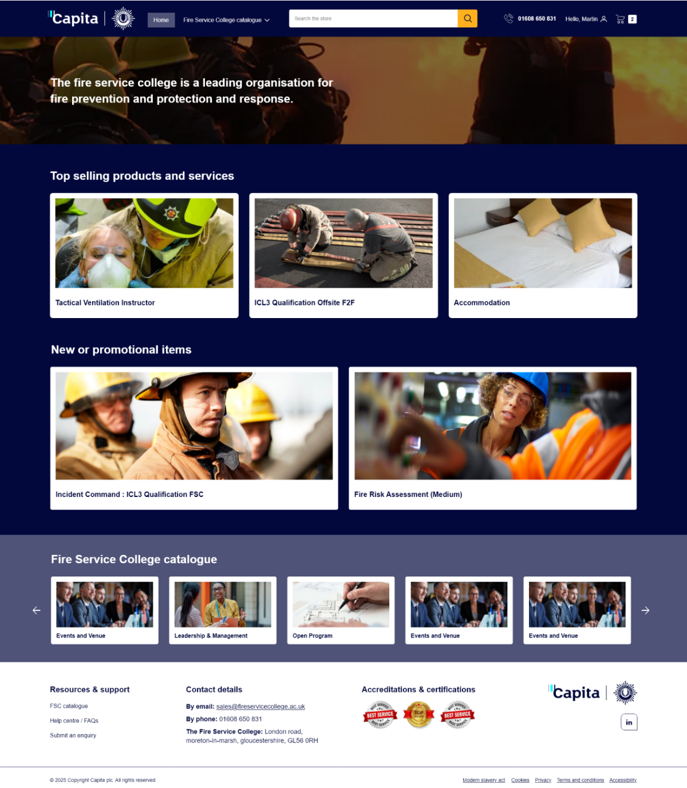
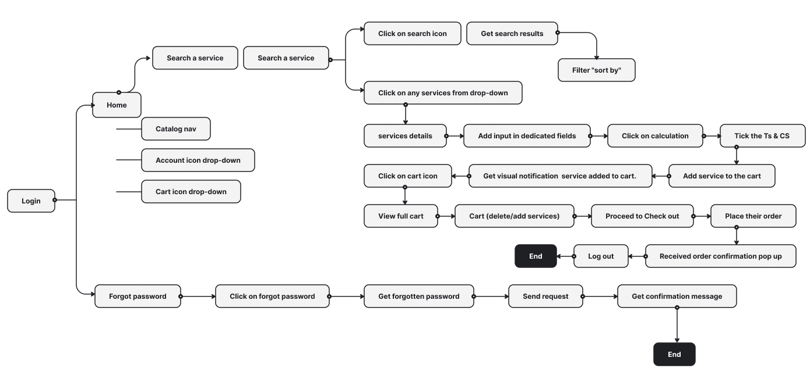
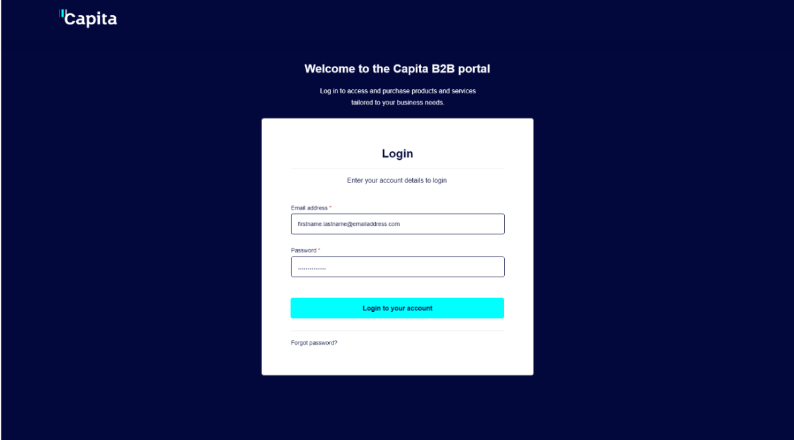
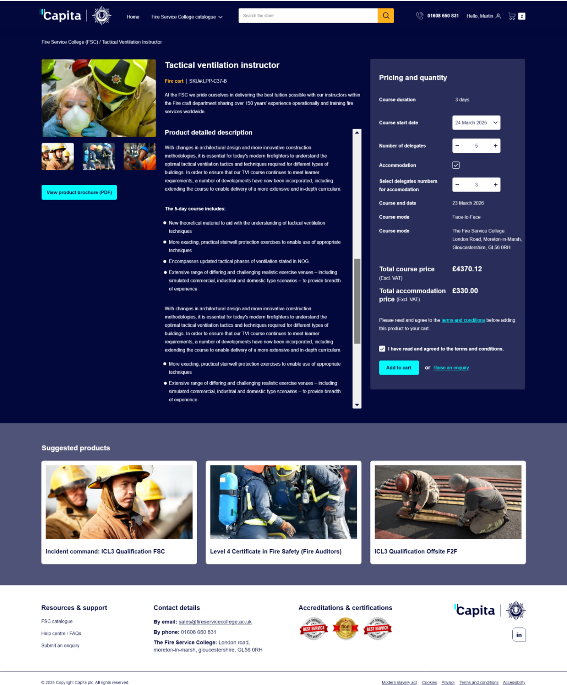
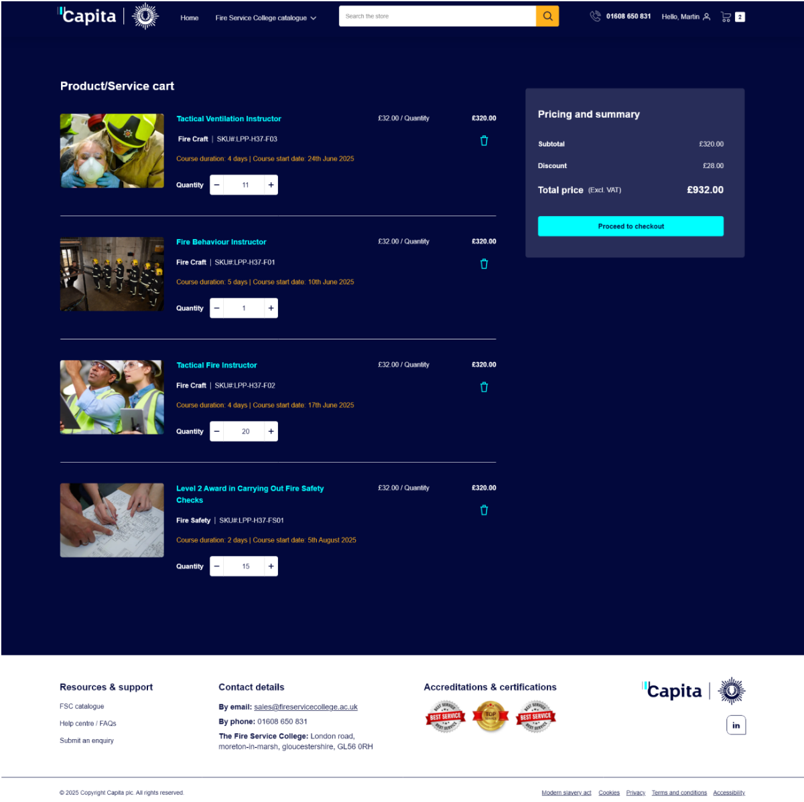

Users think in use cases, not internal categories
Participants grouped products by what they wanted to achieve, not by business structure.
Design impact: renamed categories in user language and organised navigation around tasks.
Capita’s sales process relied on manual data entry and inconsistent documents, which slowed order fulfilment. I led the design of a Salesforce B2B Commerce storefront that lets business buyers find, configure and order services on their own.

Overview
Capita’s sales processes were manual, which delayed order fulfilment and created operational inefficiency. There were no standard templates for key documents such as proposals and SLAs across departments, which made the workflow even harder.
The goal was a self-service storefront where Capita business buyers and procurement teams could browse entitled services, see custom pricing and place orders without waiting on a sales rep.
The challenge
Approach
A structured, user-centred process focused on fast validation and stakeholder alignment.
Process
Human-centred and iterative: empathy for end users, creative problem-solving, and prototyping to validate early.
Discovery, research, survey
Persona, empathy map, journey
IA, user flow
Wireframes, visual design, accessibility
Usability check, improvements
Stakeholders
I presented progress every two weeks to the Director of Digital Commerce and the VP of Sales. Every presentation was framed around business KPIs (cart completion rate, average order processing time and support-ticket volume) instead of design terms.
Stakeholders asked for 12 extra fields on the order form. A card-sorting workshop and abandonment data aligned the team on 4 essential fields, and form completion rose by 35%.
Audience
Capita business buyers and procurement professionals in specific Lines of Business (LOBs). They expect a consumer-grade experience, but their organisations have structured purchasing: entitlement-based product visibility, custom pricing and account-level order history.
Leadership
I led one junior UX designer and set up processes that improved both output quality and team growth.
Timeline
A phased rollout across Release 1 and Release 2, covering sandbox testing, QA handover, SIT/UAT and production builds on Salesforce’s Lightning Web Runtime. About 12 weeks, plus time for training and post-launch support.
Empathise
I ran 8 contextual inquiry sessions with B2B buyers across 3 customer segments:
Key questions
Card sorting
Participants grouped products by what they wanted to achieve, not by business structure.
Design impact: renamed categories in user language and organised navigation around tasks.
Closed sorting showed high agreement on primary categories across both user groups.
Design impact: locked the top-level IA and focused iteration on deeper levels.
Users preferred fewer category levels and relied heavily on filters.
Design impact: reduced depth and moved high-value filters earlier.
Ambiguous or overlapping labels caused hesitation and wrong turns.
Design impact: standardised terms across navigation, filters and specs.
Define
Three personas covered the range, from a process-driven procurement manager to a casual buyer who orders a few times a year.
Jackson manages a team of buyers and makes sure raw materials and parts are ordered on time and within budget. He is process-driven and values efficiency, accuracy and cost-effectiveness above everything else.
Shara constantly sources components, researches technical specifications and checks compatibility across multiple schools in the trust.
Maria is an office administrator who sometimes orders supplies and consumables. She is not a procurement professional; she wants the task done quickly so she can return to her main job.
Market
I compared leading B2B commerce platforms to find UX opportunities and feature gaps, and to inform design decisions for Capita’s Salesforce storefront.
| Feature | Capita Salesforce B2B | SAP Commerce | Magento B2B | BigCommerce B2B |
|---|---|---|---|---|
| Storefront framework | Lightning Web Runtime (LWR) | Spartacus (Angular) | PWA Studio | Stencil |
| Customisation | Apex, Flows, LWCs | Java-based | PHP modules | Open APIs |
| Buyer group control | Entitlement-based visibility | Role-based | Customer groups | Price lists |
| Search & navigation | Keyword search | Faceted search | ElasticSearch | AI search |
| Checkout | PO optional, dynamic fields | Multi-step | Customisable | One-page |
| Order history & inquiry | Detailed tracking, inquiry forms | Order logs | Reorder tools | Order APIs |
| Integration | ERP (SAP), RCA, SSO | SAP-native | ERP plugins | Open connectors |
| Performance | Optimised via LWR | Heavy but scalable | Moderate | Fast & lightweight |
Ideate
Mapping each touchpoint, from login to order confirmation, showed where to streamline steps and where users needed more reassurance.

Low-fidelity wireframes
Each greyscale wireframe follows the layout of its final screen, block for block: the same header, grid, pricing panel and footer. That let stakeholders sign off structure and content before any brand styling.
Design
A dark, high-contrast brand theme with cyan primary actions, designed for buyers placing large multi-delegate course orders.



Rationale
Each major decision is traced back to a user need and a measurable outcome.
| Design area | Rationale | Key decision | Outcome |
|---|---|---|---|
| Core design principle | B2B commerce has complexity that must be managed, not removed | Shifted complexity from users to system logic and UI structure | Lower cognitive load with enterprise-level control |
| User-centred foundation | Power users and standard engineers have different needs | Role-aware experiences without fragmenting the UI | Efficient for experts, guided for occasional users |
| Information architecture | Users struggled with deep hierarchies and inconsistent categories | Open card sorting, validated by closed sorting and dendrograms | Better findability and faster navigation |
| Product discovery | Buyers need confidence in specs, compatibility and price | Spec-first layouts and meaningful grouping | Faster, better-informed purchasing |
| Decision support | Too many choices slow decisions down | Fewer visible options, progressive disclosure | Faster tasks, less decision fatigue |
| Task efficiency | Repeat and bulk buying are critical in B2B | High-frequency actions made prominent and consistent | Less time on task for power users |
| Checkout | B2C-style checkout caused friction | Streamlined multi-step checkout with bulk and reorder | Fewer errors, smoother completion |
| Consistency | Users rely on known patterns | Followed Salesforce and enterprise eCommerce conventions | Shorter learning curve, more confidence |
| Visual clarity | Dense information overwhelms users | Clean layouts, strong hierarchy, minimal decoration | Better scanning and focus |
| Accessibility | Interfaces must work in real-world conditions | Readable type, spacing and contrast | Inclusive and usable on every device |
| Validation | High build cost demands confidence | Usability testing and affinity mapping | Less rework, stronger stakeholder buy-in |
| Business alignment | Must scale with growth | Modular, reusable components | Future-ready, lower maintenance cost |
Principles
Proven UX laws guided decisions where research alone didn’t settle the choice.
Applied: Reduced category depth using card-sorting insights, and put advanced filters behind progressive disclosure.
Impact: Faster product discovery and less hesitation.
Applied: Grouped specifications into clusters (performance, compatibility, pricing) and broke checkout into smaller steps.
Impact: Better understanding of technical data, fewer checkout errors.
Applied: Enlarged primary CTAs (Add to cart, Reorder, Checkout) and placed frequent actions in the same spot on every screen.
Impact: Quicker tasks, especially for repeat and bulk orders.
Applied: Followed familiar B2B eCommerce patterns (PLP → PDP → Cart → Checkout) and Salesforce conventions.
Impact: Shorter learning curve, faster onboarding.
Applied: Grouped pricing, availability and delivery info, and clustered filters with technical specs.
Impact: Clearer information, less visual noise.
Applied: Consistent spacing, type and components, balancing dense data with white space.
Impact: More user confidence, lower perceived complexity.
Accessibility
Accessibility was designed and validated against UK Government Digital Service guidelines and WCAG 2.1 AA, so the platform stays usable and compliant through long, task-heavy workflows.
Readable for users with visual impairments.
Users can complete every task without a mouse.
Fewer errors in complex B2B workflows.
Works reliably with assistive technologies.
Dense data stays scannable and unambiguous.
Users always know the system state and next step.
Solution
Results
Results of the Salesforce B2B Commerce transformation.
Closing
Questions or feedback? I’d love to hear them: yogeshmalikbe@gmail.com